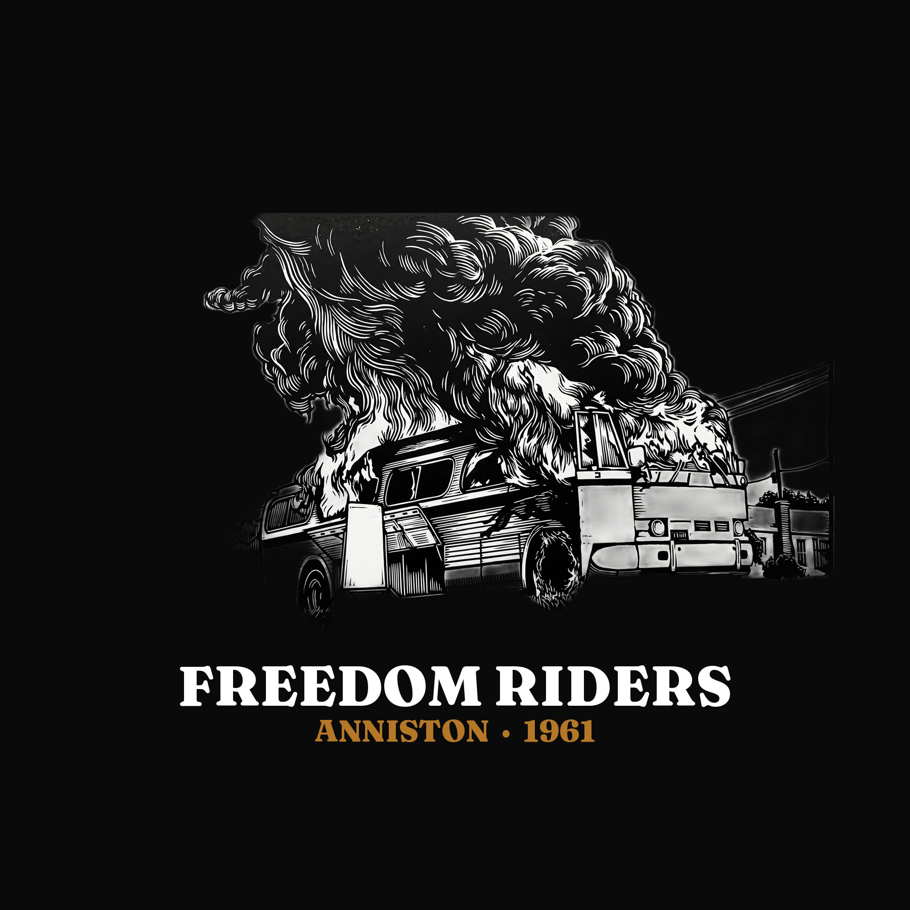
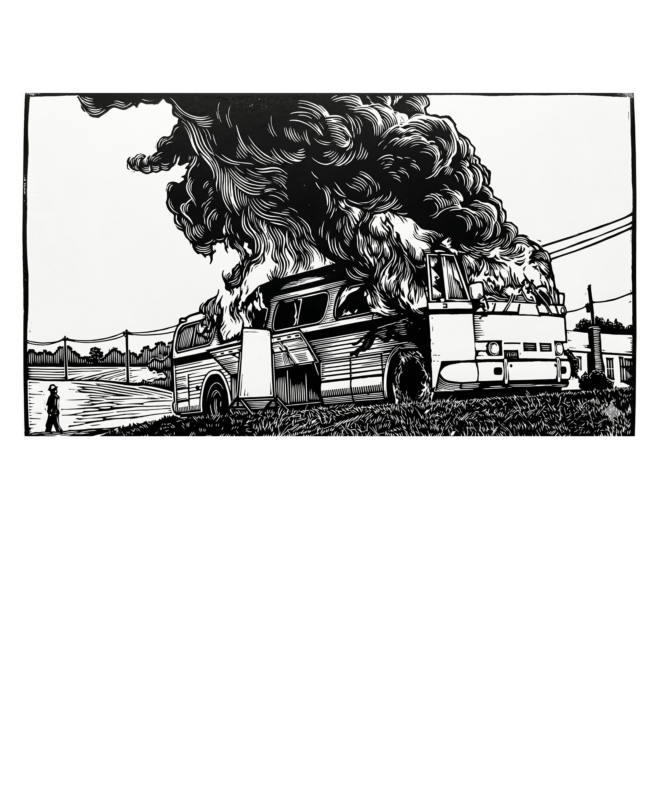
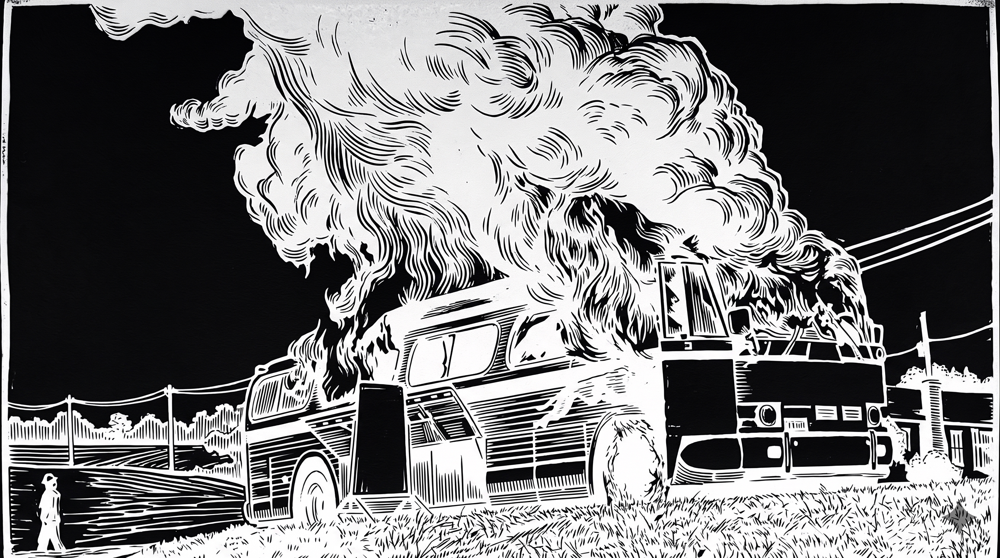
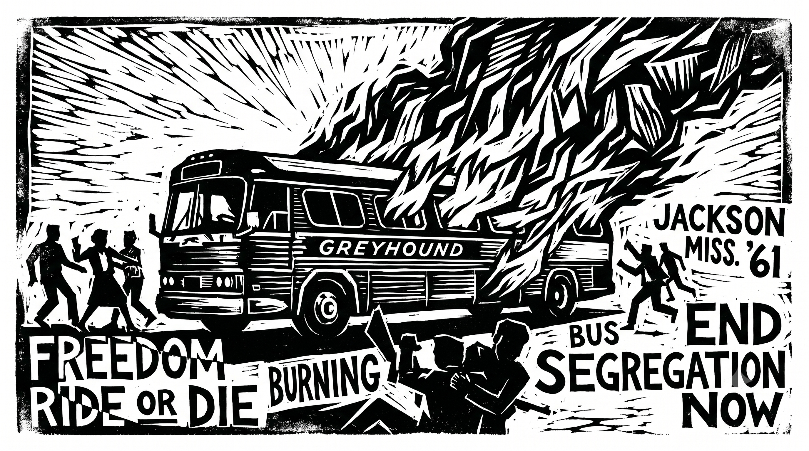

Design status: Original source woodcut (black ink on cream) has full peripheral detail — figure on left, utility poles, grass, buildings. Background removal ate into those edge areas. Using the inverted/treated black-bg version for the black shirt. The bg-removed v2 versions are not usable.
Shirt Composite Mockup — Black

GPT composite · black shirt · front design
Print-Ready Files — Front & Back (black bg, no removal needed)

Front · treated for black shirt · white on black

Back · Anniston, Alabama · May 14, 1961
Canonical Source Files — Full Detail Preserved

bus-woodcut.png · black ink on cream · canonical source

bus-woodcut-inverted.png · white on black · Fourthwall upload for black shirt
Portrait Variant — David Dennis

"I was trying to get a date with a woman."
David Dennis
Freedom Rider · 1961
Jackson, Mississippi arrest photo · May 1961
Freedom Rider · 1961
Jackson, Mississippi arrest photo · May 1961
Cream Shirt Variant
bus-woodcut.png · cream shirt · black ink · $40

bus-woodcut-v2.png · v2 sticker / cream shirt option
Interactive Design Tool:
fr-shirt-design.html
— edit text, toggle black/cream, hide panel for screenshot.
Blossom & Decay Angle Tool: blossom-decay-angle-tool.html
Blossom & Decay Angle Tool: blossom-decay-angle-tool.html